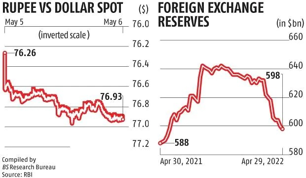
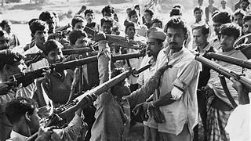

The Story begins in 1971 :
The story of Bangladesh started way back in 1971, when india liberated Bangladesh.But even after independence Bangladesh as a country was long gone for poverty and famines but story and steadily due to the growth of the textile sector and several other government policies the economy of Bangladesh started doing well so well that in 2007 Bangladesh per capita income was just half as that of India but by 2021 it had surpassed India similarly while India had a female labour participation rate of 27% for Bangladesh its today 37% and if that wasn't impressive enough IMF itself had predicted that Bangladesh would soon overtake successful economies like Denmark and Singapore in terms of GDP.
What went WRONG..!

This was the story of Bangladesh so the question is when everything was going so well what exactly suddenly went wrong in Bangladesh well firstly just like the rest of the world bangladesh economy witnessed two crises first with COVID and then with Russia Ukraine War and Bangladesh was severely affected because 80% of their exports came only from the textile sector so firstly during the pandemic their exports collapsed and millions of workers lost their jobs similarly after the Russia Ukraine War the cost of commodities like oil and wheat shot up so exports collapsed and the imports shot up so due to the pandemic the exports quickly collapsed but they did not recover very very quickly but at the same time due to the Russia Ukraine War the cost of imports shot up and this led to such a cascading effect on the forex of Bangladesh that they are forex reserves went from a peak of $48.1 billion in August 21 to just $26.8 billion in June 24 and the Bangladeshi Taka had depreciated by 36% against the US dollar since January 2022 so obviously the cost of food and energy short up eventually things got so bad that in 2023 alone the government raised the price of electricity and gas three times eventually more than a quarter of Bangladeshis were taking loans just to buy daily necessities and food now while the people were hungry struggling and taking on loans for food the youth of Bangladesh was facing a horrendous time this was because forty percent of Bangladeshis aged between fifteen to twenty four were neither working nor studying or training so long story short people were hungry angry and unemployed now what happens when people are hungry angry and jobless it causes a Revolution
The Revolution :

Spark to this revolution started with the reservation system of Bangladesh and here's where India needs to learn a very very important lesson people just like India even Bangladesh implemented the post independence reservation system in the country why because they want to promote equality social justice and inclusivity so initially 80% of the government jobs I repeat 80% of the government jobs were reserved only for the freedom fighters and the women who were affected during the 1971 war so this left only 20% of the government jobs to be filled on merit so this was too much right if 80% of the jobs were reserved then it's injustice to the open population right well that is why after a lot of pressure the government slowly increased this quota to 40% and then to 55% in 1996 so 55% of the jobs were available on the basis of Merit but the sad thing was that to pacify the Freedom Fighter population in 1997 and 2010 the government expanded this freedom fighter reservation to the children and the grandchildren of the freedom fighters so now not only did the Freedom Fighters enjoy this reservation but the two generations after the freedom fighters also enjoyed this reservation even if they had nothing to do with freedom fighting.

by 2018 56% of the government jobs were still filled based on reservations and only 44% of these jobs were filled based on merit and out of this 56% also 30% of the jobs were reserved for freedom fighters their children and the grandchildren now you tell me guys if you were a Bangladeshi girl you want extremely hard use code excellent marks and you desperately need a common job but during this situation in front of you if there was a rich stupid girl with half the marks as you catch the job just because her grandfather was involved in the freedom struggle how would you feel at the same time it was a loss for the government also because the government was not getting good workers so the government was filled with mediocre people and the worthy people were not getting government jobs at all. so ironically the very system that was meant to give social justice became an instrument of social injustice to the people of Bangladesh this is the reason why the people of Bangladesh were extremely frustrated and this frustration reached a boiling point in 2018 and here's where a massive public unrest started this massive unrest in public pressure forced the common to abolish the quota system in civil and public services entirely and this is how the quota system was put to rest so this problem was solved right then the question is suddenly because of resolution how did Bangladesh suddenly fall into a political nightmare.
Well, all of this started with an explosive event in 2024 that ignited this political revolution. The reason why it started was because, in 2021, some children of these freedom fighters went to the high court and petitioned to bring back the 30% reservation system. They said that the government had removed this quota system in an unjust manner. Surprisingly, on the 5th of June 2024, the high court, tell you what, a bombshell ruling in their favour, ordered the government to re-establish the 30% freedom fighter quota in the civil services. This ruling was the spark that ignited the protest and marked the beginning of a political revolution in Bangladesh.So, students got so angry that they took to the streets. They staged a blockade and stopped the trains and buses from running. In response, the government and police responded with force and attacked the students with tear gas and rubber bullets.
This begs a very, very important question:
- why on Earth did the government support the reservation when the people of Bangladesh themselves do not want it?
- why did the government respond with force, and why did they not directly abolish the freedom fighter reservation system?
Well, here's why, ladies and gentlemen: the dirty politics comes in..
Bad Politics Comes In :
As it turns out the Freedom Fighter Reservation was benefiting the ruling Awami League of Sheikh Hasina.It's like the Congress party in India the Army League played a crucial role in the independence of Bangladesh and why do they still support the freedom fighters well that was because the descendants of the freedom fighters represented a significant voter base for the Awami League so by providing reservations and benefits to this particular group the party could maintain political dominance.

On top of that just like India only the government could issue certificates which could qualify you as a freedom fighter in Bangladesh but there were reports which said that sixty thousand certificates were under the scrutiny for being fake certificates so this led to acquisitions that the system was being used to reward the political allies and the supporters of the Aamir League and while all of this was happening parallely due to the Russia Ukrainian war and Kuwait the economic condition of the country got so bad that people were taking out loans just to buy food.
The people are taking out loans just to buy food at the same time unemployment was at its peak and the entire nation was struggling with an economic disaster so while people are hungry angry and jobless this verdict just rubbed salt into the wounds of the Bangladeshi people and this is when the student protest started but even after the student protest started as you can see in this chart until the middle of July the number of protests was very less so it was largely a non violent moment but part but something terrible happened in the middle of July because of which people began to die and here's where the government made a big big mistake.
The Terrible Event :
So the question is what exactly happened well firstly on 14th of July 2024 during a press conference prime minister Sheikh Hasina made a provocative statement about the ongoing student protest and just like today politicians in India often call protesters as anti national when asked about the students demands sheikh Hasina responded by saying "If the grandchildren of freedom fighters do not receive quota benefits who would get it the grandchildren of Razaakers?"
Understand the gravity of the statement. 'Razakers' is a highly derogatory term in Bangladesh, and it refers to those people who supported the Pakistani military during the Bangladesh Liberation War. This was such a bloody conflict that thousands of women were raped and almost three million people were killed in a genocide. So, the term 'Razakers' is as bad as the Nazi label for the Jews in Germany. Similarly, the social welfare minister, Deepu Moni, even went to the extent of saying that Razakars have no right to hold the bloodstained red and green flag of the liberation war martyrs.In a way, the government was labelling the students as Razakars. Here's where the students took it to the next level and started calling Sheikh Hasina a dictator.
The final deal in the coffin was when the student wing of Army League launched a violent counter protest against the demonstrators and this is where the violence started erupting
Position got so bad that Supreme Court of Bangladesh had to intervene and reduce the reservation from 56% to 7% but when the government did not take any action against the killers of the protesters a large scale protest resumed again on second of August 2024 and this 3 day protest told so violent that on fifth of August 2024 pm Sheikh Hasina resigned and fled to India for her safety this is how and why the political revolution and regime change happened in Bangladesh now the question is how will this conflict and chaos in Bangladesh affect India?
How It Effects India :

If you look at the trade between India and Bangladesh Bangladesh is our 8th largest export partner and as of 30th of July 2024 India and Bangladesh came to a complete halt so the trade of cotton tea coffee vegetables vehicles and electrical machinery will be affected secondly the political feature of Bangladesh is uncertain and shaky people are not safe the economic condition is terrible and the future seems to be a just like the 1971 liberation war india could face a huge refugee crisis and just to put this in perspective when the 1971 Bangladeshi Freedom what happened around 8.5 billion refugees came to India and this cost us $700 million for your similarly now this situation could escalate into a humanitarian crisis which will strain India's resources and lastly there could be a potential spillover into India's northeastern region it's too far sighted but even then India is to be very very careful and this brings us to the last part of the episode and that are the lessons that India is to learn from the fall of Bangladesh
Lessons we learn From This :

- Reservation when given to the unworthy is the perfect anchor for chaos.
- Do not Ever be over dependent on one or two trade exports.
- Every leader in the world must understand that vote bank politics is the best way to plot your downfall.
In this case 80% of Bangladesh exports depended only on the textile industry so when the world was hit by Covad and the ripple effects of Russia Ukraine War its snowballed Bangladesh into an economic crisis.
It might work for a few decades or sometimes even But beyond the point political leaders need to bank on excellence and impact and not propaganda and conflict
Lastly an important message to other politicians is that do not ever call protesters anti national because if they really turn anti national things will be very very bad not just for the country but also for YOU.
This was the story of the chaos in Bangladesh and the lessons that India is to learn from it and I just hope you found something valuable to learn from this case study.